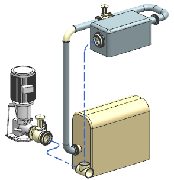
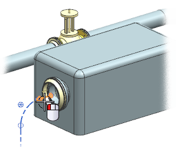

右击视图背景并选择定向视图→定制视图→TFR_1。

点击关闭。
选择型材 。
在型材组的型材列表中，选择指定型材。
点击指定型材。
在文件夹视图列表框中，展开：
→管线部件库 →管道
右击 DIN-Steel 并选择搜索子项。
选择子站 2的法兰上的端口。

法兰的 NPS 300特性值将被读取到搜索准则中。
点击确定。
在成员视图列表框中，选择 R_ST_2448_300，然后选择确定。